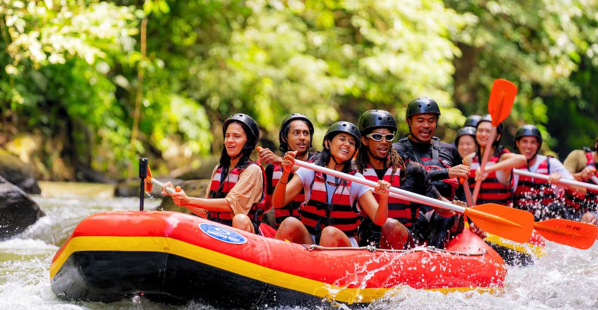

For experienced rafters craving intense thrills, the Upper Gauley River in West Virginia is a top-tier challenge, featuring Class IV–V rapids, best tackled during the September–October dam release season. This full-day trip (8–10 hours) plunges you into more than 100 powerful rapids like "Pillow Rock" and "Sweet’s Falls," surrounded by steep Appalachian cliffs and dense forest. Expect an adrenaline-pumping ride with very little downtime, requiring teamwork, strength, and sharp reflexes

the Snake River in Wyoming is perfect for families and beginners, with Class II–III rapids spread over a half-day trip (3–4 hours), best enjoyed from June to August. The trip flows beneath the stunning Grand Tetons, offering gentle splashes, calm stretches, and chances to spot wildlife like bald eagles and moose—ideal for kids and those wanting to enjoy the scenery without too much intensitythe Pacuare River in Costa Rica combines moderate to challenging rapids (Class III–IV) with lush jungle beauty, best explored during the May to October rainy season. You can opt for a full-day or overnight (2-day/1-night) journey, navigating through remote canyons with waterfalls, exotic birds, and occasional wildlife sightings